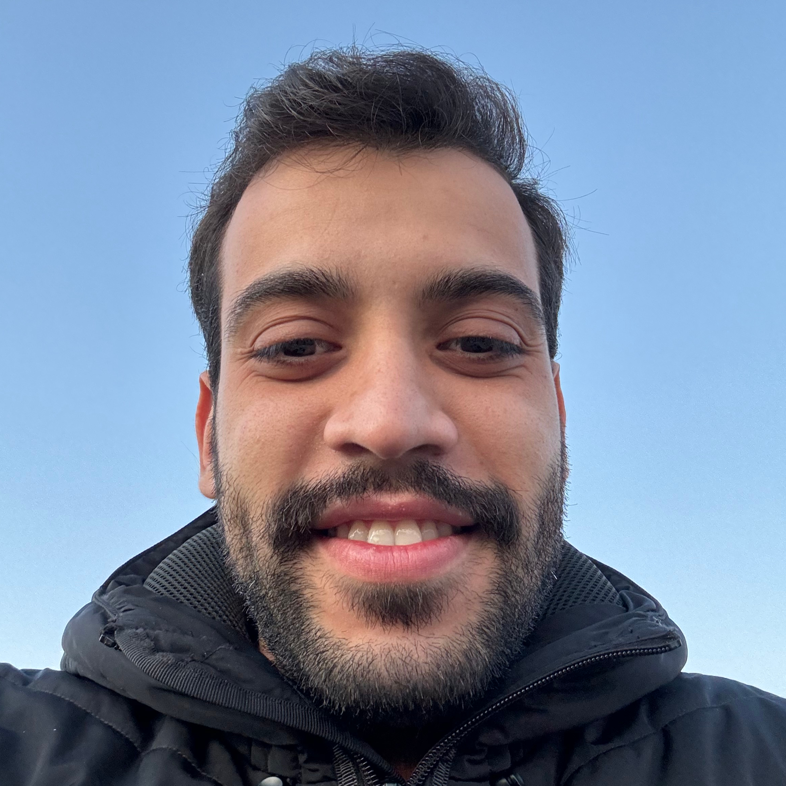

I am a second year PhD student in computer science at Université Grenoble Alpes. My research aims to establish a bridge between practical algorithms of machine learning and theoretical foundations of Stochastic Approximation. I am fortunate to be supervised by Nicolas Gast and Dorian Baudry and being part of the Ghost team.
Main areas of research: Stochastic Approximation, Reinforcement Learning, Stochastic Optimization.